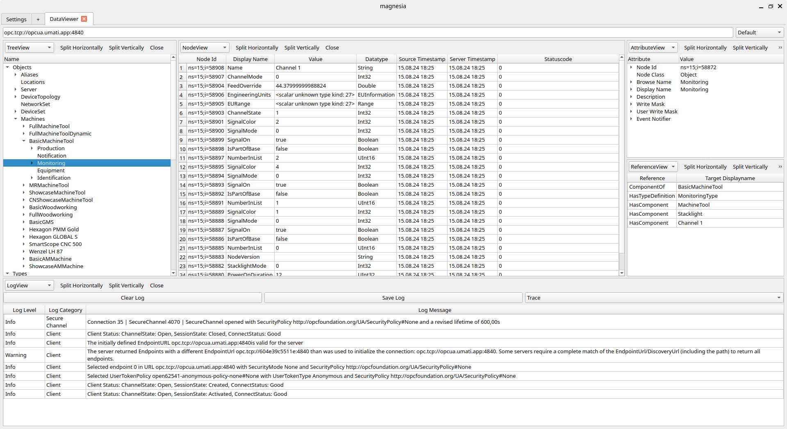
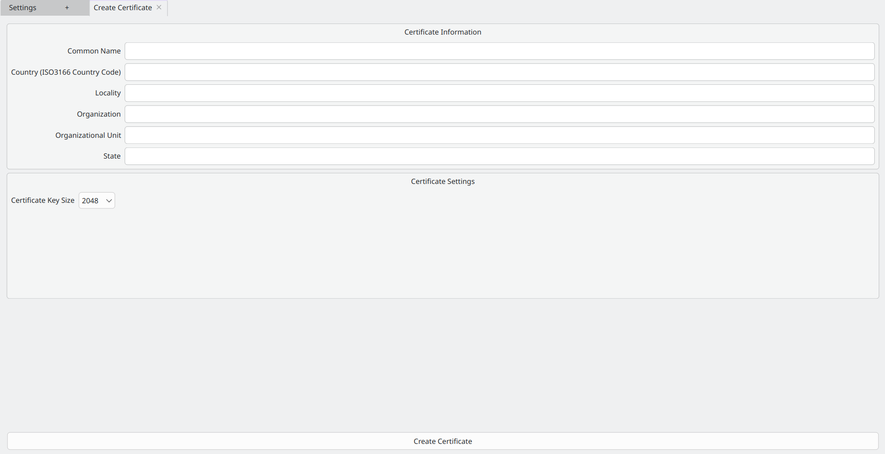
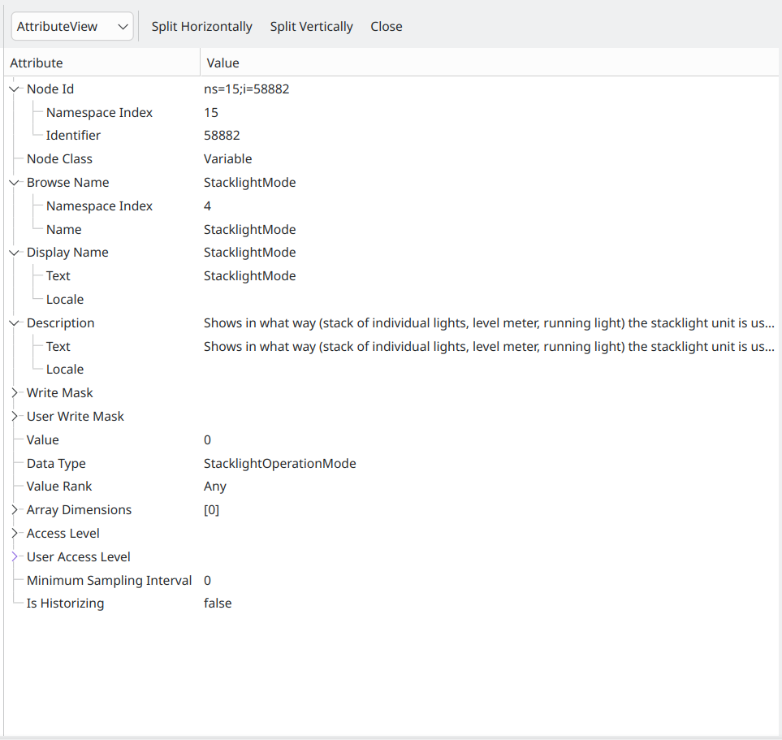

Extensible OPC UA Client
Jan Schlachter, Alexander Franjic, Christoph Wolf, Marius Reddig, Christopher Besch, Marwin
Glaser •
12th Sep 2024
Extensible OPC UA Client
Working Title: Magnesia
Requirements
- Graphical OPC UA Client
- Extensible / Open Source
- Cross-Platform C++
Live Demo
Linux
macOS

Windows
GUI Overview
- Activities as Tabs
- AddActivity
- Settings
- DataViewer
- About
- DataViewer uses Panels
User Docs
Activity Development
Settings Activity
- Edit Settings
- Manage Certificates and Keys

SettingsManager
- Settings grouped in Domains
- Domains defined by (Activity) developer
Define new Settings
Update Settings
Retrieve Settings
Reset Settings
Setting Types
- Bool
- String
- Int
- Double
- Enum
- HistoricServerConnection
- Certificate
- KeySetting
- ApplicationCertificate
- Layout
StorageManager
- Declared in StorageManager
- Defined in SQLStorageManager
- Migrations
Store Data
Retrieve Data
Retrieve All
Notice Change
- Cascade Deletion
- e.g. Certificate → ApplicationCertificate → HistoricServerConnection → HistoricServerConnectionSetting
Certificate Activity
- Create/View ApplicationCertificates
Create
View

DataViewer

Panel Development
TreeView
AttributeView
NodeView

ReferenceView

LogView

Router
- Open Activity without knowing it
URL Handler
Open URL
Extensibility
- Easy to develop/add new
- Activities
- Panels
- Settings
- State of the art CMake build system
Build and Dependencies
- C++20
- CMake
- Dependencies in all major Linux Distros (including Debian)
- gcc 12.2.0 / clang 14.0.6 or newer
- cmake 3.25.0 or newer
- Qt 6.4.2 or newer
- open62541pp 0.13.0 (via CMake's FETCHCONTENT)
- Nix Flake
CI
- Implemented in Shell Scripts
- Runs locally
- Independent of GitLab
Code Docs

Process / Tooling
- Full meetings weekly
- Where are we?
- What needs to happen?
- Actual work alone / in pairs
So much Git!
Pflichtenheft Phase
- 24 pages
- LaTeX
- Graphics with draw.io
- Git
- 59 Merge-Requests (MRs)
- In German
Design Phase
- 33 pages
- LaTeX
- Graphics in TikZ, draw.io, Inkscape, qt-creator
- Git
- 51 MRs
- Human approval process
- In English
Implementation / QA Phase
- 11k lines of code (+5k blank and comments)
- Neovim, VSCodium, CLion
- Git
- 101 MRs
- Human approval process
- CI
- In English
Presentation
- 22 slides
- Reveal.js
- Git (directly on main)
- In English
Challenges
- Different Levels of Skill
- C++ new for 4/6
- Qt new for 5/6
- OPC UA new for 6/6
- Solution: Review Process
Did we make it?
- 33/34 must-have criteria from Pflichtenheft
- OPC UA doesn't allow subscribing Node references
- 3/13 nice-to-have criteria
- Implemented according to Design:
- Storage/Settings
- Activity System
- Layout System
- ...
- Redesigned in implementation phase:
- OPC UA abstraction
Lessons Learned
- Git, C++, Qt, OPC UA
- Communication
- Splitting work with different skill levels
- Lift as You Climb